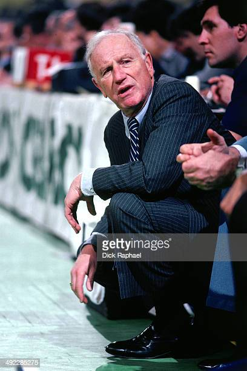

Red Holzman mena les Knicks à gagner deux titres de champion NBA en 1970 et 1973
À la mi-saison 1967-68, l’entraîneur Dick McGuire est remplacé par William « Red » Holzman. L’impact est spectaculaire : alors à 15-22 les Knicks terminent la saison avec un 28-17 sur la seconde partie de la saison. Avec 43 victoires au total, les Knicks réalisent leur première saison à plus de 50 % de victoires depuis 9 ans. À la fin de la saison régulière, 1969-70, les Knicks remportent 60 victoires grâce à une défense de fer et à un jeu très collectif. Willis Reed est nommé MVP, Red Holzman entraîneur de l’année. New York arrive sans encombre jusqu’en finales NBA, où ils affrontent les Lakers de Los Angeles de Jerry West et Wilt Chamberlain. La série est très disputée et va jusqu’à la septième manche décisive. Willis Reed, blessé lors du cinquième match est considéré comme indisponible pour le reste des finales. Mais il prend finalement part à la septième manche pour donner le souffle nécessaire à son équipe. New York remporte le match et le premier titre de son histoire, Reed est élu MVP des finales. Et le referont en 1972-73.
